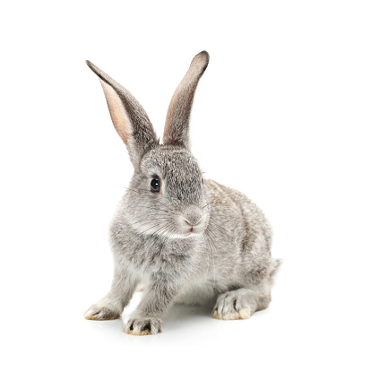
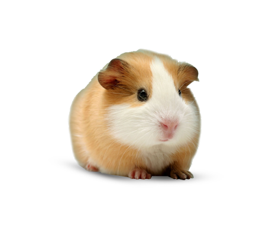
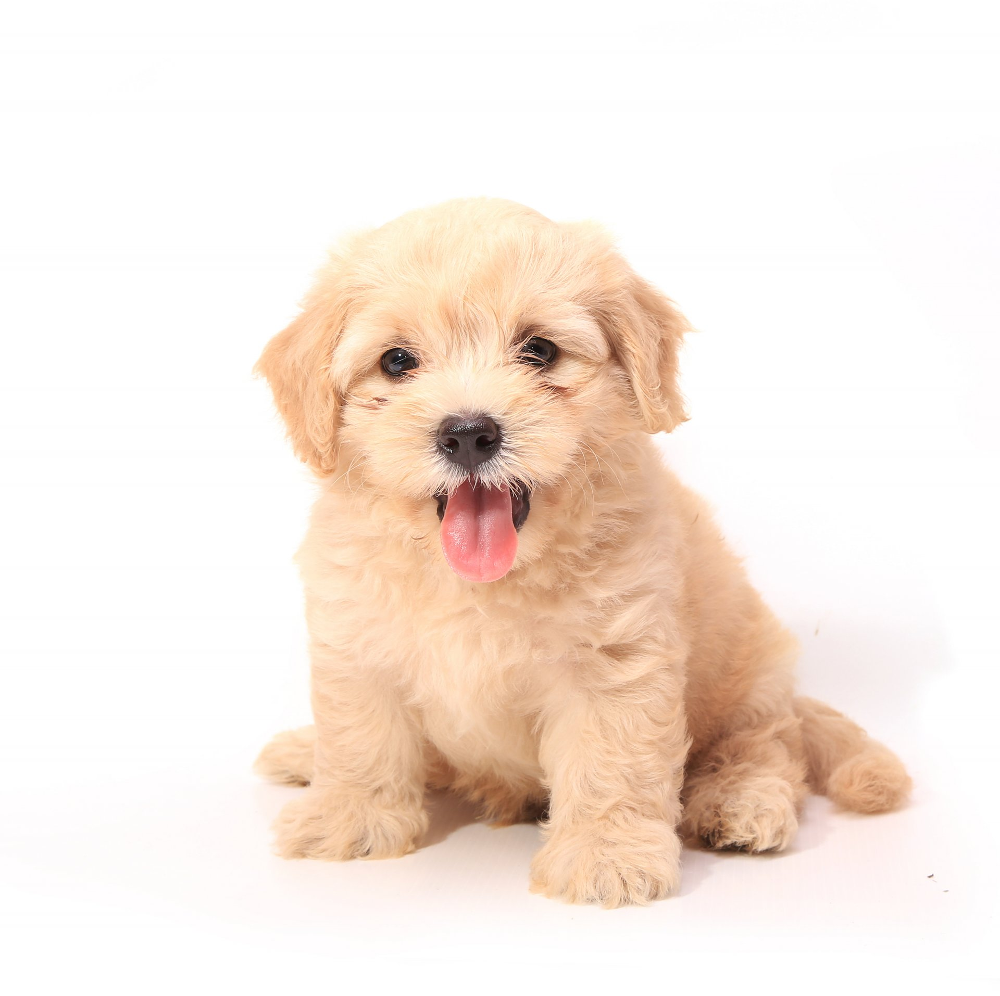

Какие же есть виды домашних любимцев?
Давайте посмотрим!

Декоративный кролик
Кролики — очень веселые и интересные зверьки. Они могут научиться различным командам и приучиться к лотку, главное, заниматься с ними

Морская свинка
Морские свинки-маленькие очаровашки. Их считают высокоинтелектуальными животными с особым строением скелета. Они с легкостью узнают своих любимых хозяев, иногда показывают свой характер

Собака
Да-да. Собака-тот самый друг человека.Они известны своими способностями к обучению, любовью к игре, возможностью адаптироваться к людям и социальным ситуациям

Кошка
Кошки - ласковые питомцы, хоть они и из отряда хищных животных ( львы, леопарды, пумы ).Они бывают всякими-разными, все это зависит от породы и характера